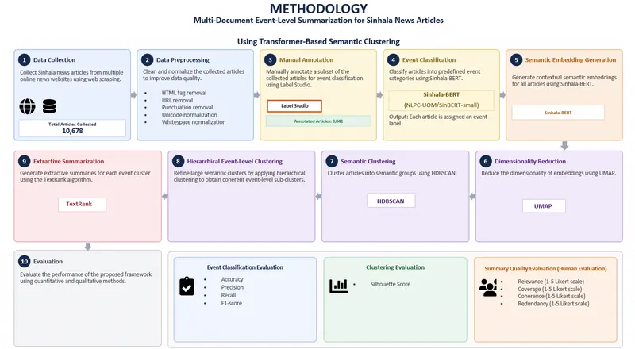
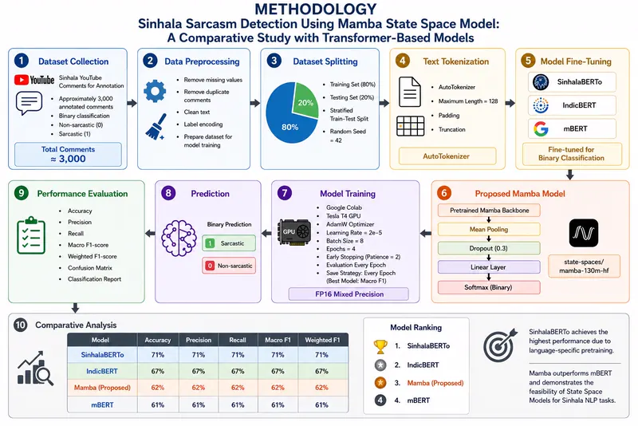

Deep Semi-supervised Learning for Medical Image Analysis: A Survey
Comprehensive survey categorising semi-supervised methods that reduce dependence on large expert-annotated medical datasets.
Researcher in Computer Vision & Trustworthy AI
Lecturer, Department of Software Engineering,
Sabaragamuwa University of Sri Lanka,
and Research Intern,
University of Southern Queensland
I work at the intersection of computer vision, trustworthy AI, and efficient visual learning. My current work spans explainability for modern vision models, evaluation of generative medical imaging, and reliable 3D and multimodal perception. I am preparing for doctoral research on spatial understanding under incomplete or uncertain observations.
Research agenda. Building visual systems that are useful in practice, understandable to their users, and honest about uncertainty.
Open for research collaboration.
Email | CV (pdf) | Google Scholar | ORCID | DBLP | alphaXiv | GitHub | LinkedIn | ResearchGate
Papers where I am a primary or significant contributor. Full record on Google Scholar, ORCID, DBLP, alphaXiv, and ResearchGate.
Comprehensive survey categorising semi-supervised methods that reduce dependence on large expert-annotated medical datasets.

Synthesises state-of-the-art deep learning techniques, benchmarking trends, and open challenges for citrus leaf disease recognition in real-world deployment.
[paper]

Semi-supervised framework using pseudo-labelling to classify tomato leaf diseases under label scarcity, sharply reducing dependence on annotated data.
[paper]

Robust Vision Transformer framework for early tomato leaf disease detection using attention-based feature extraction.

Systematic study of amplitude vs. angle encoding and qubit scaling in hybrid quantum-classical CNNs for dermatological skin lesion classification.

Unified Zero Trust security framework for Kubernetes integrating SPIRE, Cilium, Falco, Kyverno, and Vault.

Cross-layer event correlation and automated response validation for Zero Trust Kubernetes deployments.
Layered Zero Trust security architecture for Kubernetes clusters, spanning identity, network, workload, and policy enforcement.
[paper]
Evaluation metric for generative radiology image models that scores fidelity, memorization, and coverage as separate axes, built on features from a frozen radiology-pretrained vision transformer.
[arXiv]
A unified explainability framework with conservation-valid relevance propagation for arbitrary Vision Transformers, decomposed into four attention primitives.
[arXiv]
One of the largest controlled XAI benchmarks for modern vision architectures — 13 attribution methods across CNNs and five ViT families, evaluated on faithfulness, localization, robustness, complexity, and efficiency.
[arXiv]
_page-0001.webp)
Ultra-lightweight federated learning with attention for privacy-preserving disease recognition on edge devices.
[arXiv]
Ultra-tiny Vision Transformer with an affix attention mechanism for accurate image classification on mobile and resource-constrained devices.
[arXiv]

Large-scale, high-resolution brinjal leaf disease dataset captured in real field conditions for robust model benchmarking.

Survey of deep learning for physiological signals, focusing on multimodal fusion strategies and explainability in healthcare AI.

Self-supervised ViT with built-in explainability for disease detection without labelled training data.

Ultra-lightweight hierarchical dilated convolution network for real-time disease recognition on edge devices.
Hybrid quantum-classical architecture mirroring autonomic nervous-system subsystems for physiological signal recognition.
Learned spatial superpixel attention conditioning a trainable quantum encoding — up to 93.9% accuracy across seven benchmarks (incl. PathMNIST, PneumoniaMNIST) with as few as 60K trainable parameters, a ~100× reduction versus ResNet-18.
Reliable 3D and multimodal perception — spatial understanding under incomplete or uncertain observations, 3D reconstruction, visual SLAM, and dynamic scene understanding.
Attribution methods for vision transformers and CNNs, conservation-valid relevance propagation, and controlled faithfulness benchmarks across architectures.
Evaluating image generation — fidelity, memorization, and coverage of generative radiology models — and the robustness of explanations across architectures.
Ultra-lightweight vision transformers, TinyML, and privacy-preserving federated training on constrained devices.
Hybrid quantum-classical architectures, variational quantum circuits, encoding strategies and qubit scaling.
Medical imaging (radiology, histopathology, dermatology, mammography) and precision agriculture (crop disease recognition).
Final-year research projects I supervised in the Department of Software Engineering, Sabaragamuwa University of Sri Lanka.

N. A. Rajapaksha · Final-year research project
A framework that scrapes 10,000+ articles from Sinhala news websites, classifies events with Sinhala-BERT, groups related coverage using UMAP and HDBSCAN with hierarchical event clustering, and generates event-level extractive summaries with TextRank — evaluated on classification metrics, clustering quality, and human judgment of summary quality.
[code] [methodology]

L. D. Weerakoon · Final-year research project
Benchmarks a custom Mamba state-space classifier against SinhalaBERTo, IndicBERT, and mBERT for sarcasm detection on ~3,000 annotated Sinhala YouTube comments. SinhalaBERTo leads thanks to language-specific pretraining, while the Mamba model outperforms mBERT — evidence that state space models are a feasible alternative for low-resource Sinhala NLP.
[code] [methodology]

T. P. H. Nethmin · Final-year research project
A cloud-native pricing framework forecasting parking demand from historical transactions, weather, and event data. Seven models — gradient-boosting ensembles, LSTM variants, CNN-LSTM, and a Transformer — were compared on forecasting accuracy, revenue, price stability, and operational fairness; the Transformer performed best overall, and the deployed Azure solution achieved a 100% API success rate.
[code] [azure deployment] [api testing] [dashboard] [methodology]
T. D. Rathnasuriya · Final-year research project
Tackles temporal inconsistency in audio-visual segmentation — flickering masks between video frames — using AVSegFormer on the AVSBench single- and multi-source benchmarks. Introduces consistency-aware evaluation (Mask Consistency Score, Warp IoU) alongside mIoU and F-score, and compares four remedies; recurrent query propagation improves both accuracy and temporal stability, especially on the harder multi-source videos.
S. A. G. N. Jayasekara · Final-year research project
Quantifies the privacy-utility trade-off in public surveillance by comparing anonymization techniques — Gaussian blurring, pixelation, masking, and a novel Pose-Conditioned Silhouette approach — across convolutional (YOLOv8) and transformer-based (RT-DETR) detectors on the WiderPerson dataset, measuring privacy via SSIM and detection accuracy via mAP50.
Open to research collaboration, student supervision enquiries, and reviewing invitations. Book a short call, or send a message and I will reply by email.
Book a call
A quick conversation about a possible collaboration, a paper, or a student project. Pick any slot that suits your timezone.
Schedule on Cal.comPrefer email? nishannishankar@gmail.com